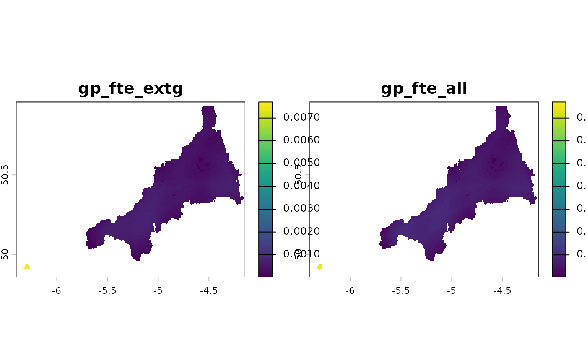

Specialized version of spread_weighted() for accessibility analysis.
Distributes supply-to-demand ratios across space using probability-based
catchment areas to calculate accessibility scores.
Arguments
- ratios
Numeric vector, matrix, or data.frame of supply-to-demand ratios:
vector: must match the number of weight layers
matrix: rows match weight layers, columns are different measures
data.frame: as a matrix, with the columns named in
ratio_cols
- weights
Multi-layer SpatRaster where each layer represents one site's probability-based catchment area
- ratio_cols
Character vector of column names if ratios is a data.frame
- full_output
Logical; whether to return intermediate calculations (default FALSE)
- plot_prefix
Character string to prepend to output names (default NULL)
Value
If full_output = TRUE, a list with
access_scores: SpatRaster stack of accessibility scores per measuresite_specific: list of site-specific accessibility SpatRasters
If full_output = FALSE, the access_scores SpatRaster only.
Examples
library(terra)
# Cornwall population grid, and Gaussian weights of the travel time to each
# GP practice
pop <- read_spax_example("cornwall_pop.tif")
travel <- read_spax_example("cornwall_gp_travel.tif")
weights <- calc_decay(travel, method = "gaussian", sigma = 10)
# Step 1 of E2SFCA: the population each practice reaches, and its GP FTE per
# person reached, for GPs excluding GPs in training and for all GPs
gp <- sf::st_drop_geometry(cornwall_gp)
gp <- gp[match(names(weights), gp$practice), ]
reached <- gather_weighted(pop, weights, simplify = TRUE)
ratios <- data.frame(extg = gp$gp_fte_extg / reached, all = gp$gp_fte / reached)
# Step 2: spread the ratios back over the grid with the same weights
access <- spread_access(ratios, weights, ratio_cols = c("extg", "all"),
plot_prefix = "gp_fte_")
access
#> class : SpatRaster
#> size : 132, 271, 2 (nrow, ncol, nlyr)
#> resolution : 0.008333333, 0.008333333 (x, y)
#> extent : -6.40125, -4.142917, 49.85792, 50.95792 (xmin, xmax, ymin, ymax)
#> coord. ref. : lon/lat WGS 84 (EPSG:4326)
#> source(s) : memory
#> names : gp_fte_extg, gp_fte_all
#> min values : 0.000027, 0.00003
#> max values : 0.007704, 0.007704
plot(access)

# With full_output, the score that each practice adds to each cell as well
detail <- spread_access(ratios$extg, weights, full_output = TRUE)
names(detail)
#> [1] "access_scores" "site_specific"